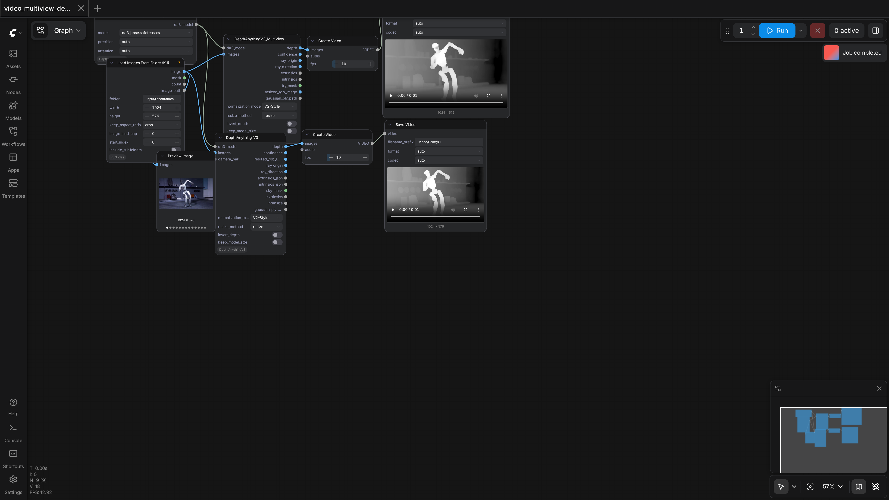

85.7%
6 passed
1 failed
6/7 tests
Workflows

advanced
pass

advanced_3d
pass

advanced_3d_multiview
pass

bas_relief
pass
No screenshot
da3_streaming
fail

simple
pass

video_multiview_depth
pass
Failed Tests
da3_streaming
32.60s
Workflow execution failed: {'prompt_id': '0c4f08a2-b1c0-4c79-808e-93f07830825a', 'node_id': '6', 'node_type': 'DepthAnythingV3_Streaming', 'executed': ['5', '3', '2'], 'exception_message': 'Allocation on device 0 would exceed allowed memory. (out of memory)\nCurrently allocated : 4.92 GiB\nRequested : 286.44 MiB\nDevice limit : 7.52 GiB\nFree (according to CUDA): 17.31 MiB\nPyTorch limit (set by user-supplied memory fraction)\n : 17179869184.00 GiB\n\nWorker traceback:\nTraceback (most recent call last):\n File "/tmp/comfyui_pvenv_6p1ttxov/persistent_worker.py", line 1749, in main\n result = method(**inputs)\n File "/workspaces/DepthAnythingV3-2350/ComfyUI/comfy_api/latest/_io.py", line 1826, in EXECUTE_NORMALIZED\n to_return = cls.execute(*args, **kwargs)\n File "/workspaces/DepthAnythingV3-2350/ComfyUI/custom_nodes/ComfyUI-DepthAnythingV3/nodes/streaming/node.py", line 249, in execute\n result = pipeline.run(normalized_images, pbar=pbar,\n File "/workspaces/DepthAnythingV3-2350/ComfyUI/custom_nodes/ComfyUI-DepthAnythingV3/nodes/streaming/pipeline.py", line 277, in run\n result = self._process_chunk(normalized_images, start, end)\n File "/workspaces/DepthAnythingV3-2350/ComfyUI/custom_nodes/ComfyUI-DepthAnythingV3/nodes/streaming/pipeline.py", line 330, in _process_chunk\n output = self.model(chunk_input)\n File "/workspaces/DepthAnythingV3-2350/ComfyUI/.ce/.pixi/envs/depthanythingv3-nodes/lib/python3.10/site-packages/torch/nn/modules/module.py", line 1779, in _wrapped_call_impl\n return self._call_impl(*args, **kwargs)\n File "/workspaces/DepthAnythingV3-2350/ComfyUI/.ce/.pixi/envs/depthanythingv3-nodes/lib/python3.10/site-packages/torch/nn/modules/module.py", line 1790, in _call_impl\n return forward_call(*args, **kwargs)\n File "/workspaces/DepthAnythingV3-2350/ComfyUI/custom_nodes/ComfyUI-DepthAnythingV3/nodes/depth_anything_v3/model.py", line 1577, in forward\n output = self._process_depth_head(feats, H, W)\n File "/workspaces/DepthAnythingV3-2350/ComfyUI/custom_nodes/ComfyUI-DepthAnythingV3/nodes/depth_anything_v3/model.py", line 1591, in _process_depth_head\n return self.head(feats, H, W, patch_start_idx=0)\n File "/workspaces/DepthAnythingV3-2350/ComfyUI/.ce/.pixi/envs/depthanythingv3-nodes/lib/python3.10/site-packages/torch/nn/modules/module.py", line 1779, in _wrapped_call_impl\n return self._call_impl(*args, **kwargs)\n File "/workspaces/DepthAnythingV3-2350/ComfyUI/.ce/.pixi/envs/depthanythingv3-nodes/lib/python3.10/site-packages/torch/nn/modules/module.py", line 1790, in _call_impl\n return forward_call(*args, **kwargs)\n File "/workspaces/DepthAnythingV3-2350/ComfyUI/custom_nodes/ComfyUI-DepthAnythingV3/nodes/depth_anything_v3/model.py", line 1379, in forward\n self._forward_impl([feat[s0:s1] for feat in feats], H, W, patch_start_idx)\n File "/workspaces/DepthAnythingV3-2350/ComfyUI/custom_nodes/ComfyUI-DepthAnythingV3/nodes/depth_anything_v3/model.py", line 1419, in _forward_impl\n fused_main = self._add_pos_embed(fused_main, W, H)\n File "/workspaces/DepthAnythingV3-2350/ComfyUI/custom_nodes/ComfyUI-DepthAnythingV3/nodes/depth_anything_v3/model.py", line 1477, in _add_pos_embed\n pe = position_grid_to_embed(pe, x.shape[1]) * ratio\ntorch.OutOfMemoryError: Allocation on device 0 would exceed allowed memory. (out of memory)\nCurrently allocated : 4.92 GiB\nRequested : 286.44 MiB\nDevice limit : 7.52 GiB\nFree (according to CUDA): 17.31 MiB\nPyTorch limit (set by user-supplied memory fraction)\n : 17179869184.00 GiB\n\n', 'exception_type': 'comfy_env.isolation.workers.base.WorkerError', 'traceback': [' File "/workspaces/DepthAnythingV3-2350/ComfyUI/execution.py", line 535, in execute\n output_data, output_ui, has_subgraph, has_pending_tasks = await get_output_data(prompt_id, unique_id, obj, input_data_all, execution_block_cb=execution_block_cb, pre_execute_cb=pre_execute_cb, v3_data=v3_data)\n', ' File "/workspaces/DepthAnythingV3-2350/ComfyUI/execution.py", line 335, in get_output_data\n return_values = await _async_map_node_over_list(prompt_id, unique_id, obj, input_data_all, obj.FUNCTION, allow_interrupt=True, execution_block_cb=execution_block_cb, pre_execute_cb=pre_execute_cb, v3_data=v3_data)\n', ' File "/workspaces/DepthAnythingV3-2350/ComfyUI/execution.py", line 309, in _async_map_node_over_list\n await process_inputs(input_dict, i)\n', ' File "/workspaces/DepthAnythingV3-2350/ComfyUI/execution.py", line 297, in process_inputs\n result = f(**inputs)\n', ' File "/workspaces/DepthAnythingV3-2350/.venv/lib/python3.10/site-packages/comfy_env/isolation/metadata.py", line 528, in proxy\n result = worker.call_method(\n', ' File "/workspaces/DepthAnythingV3-2350/.venv/lib/python3.10/site-packages/comfy_env/isolation/workers/subprocess.py", line 3516, in call_method\n raise WorkerError(\n'], 'current_inputs': {'normalization_mode': ['Standard'], 'chunk_size': [30], 'overlap': [8], 'align_lib': ['auto'], 'align_method': ['sim3'], 'resize_method': ['resize'], 'invert_depth': [True], 'save_pointcloud': [False], 'sample_ratio': [0.015], 'conf_threshold_coef': [0.75], 'da3_model': ["{'model_path': '/workspaces/DepthAnythingV3-2350/ComfyUI/models/depthanything3/da3_large.safetensors', 'model_key': 'da3-large', 'dtype': 'bf16', 'attention': 'auto'}"], 'video': ['<comfy_api.latest._input_impl.video_types.VideoFromFile object at 0x79a48c689cf0>'], 'salad_model': ["{'checkpoint_path': '/workspaces/DepthAnythingV3-2350/ComfyUI/models/salad/dino_salad.safetensors'}"]}, 'current_outputs': ['2', '5', '4', '3', '6'], 'timestamp': 1777939104725}
Details:
Workflow: /node/ComfyUI-DepthAnythingV3/workflows/da3_streaming.json
Node error: DepthAnythingV3_Streaming
Downloaded Models
9 files · 2.4 GBmodels/depthanything3/
da3_large.safetensors1.5 GB
da3_base.safetensors516.4 MB
.cache/huggingface/CACHEDIR.TAG191.0 B
.cache/huggingface/download/model.safetensors.metadata125.0 B
.cache/huggingface/.gitignore1.0 B
models/salad/
dino_salad.safetensors335.7 MB
.cache/huggingface/CACHEDIR.TAG191.0 B
.cache/huggingface/download/dino_salad.safetensors.metadata124.0 B
.cache/huggingface/.gitignore1.0 B